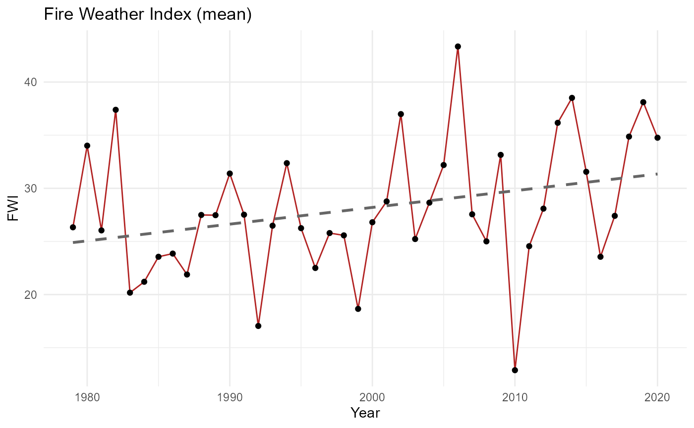
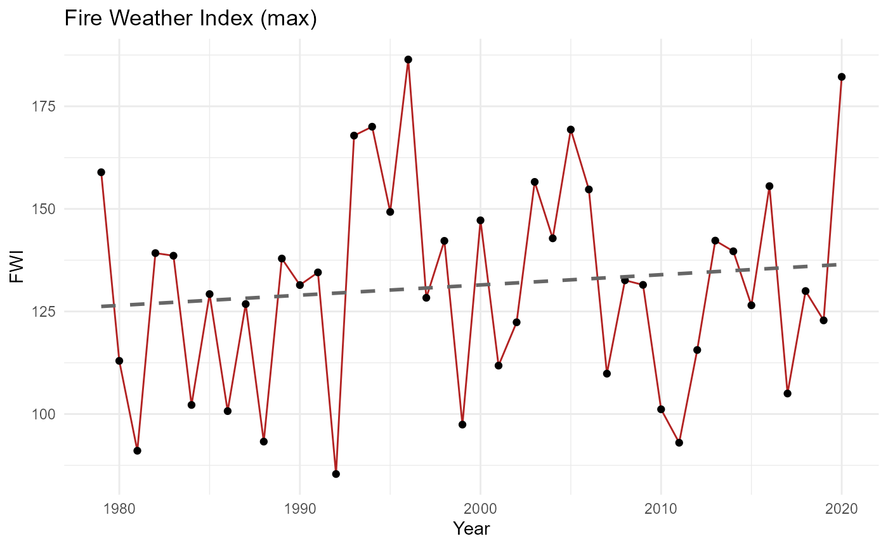

Bushfire Risk in Southeastern Australia
analysis.RmdIntroduction
The 2019–20 “Black Summer” bushfires were unprecedented in scale and
severity.
This vignette reproduces the analysis of Oldenborgh et al. (2021,
NHESS), showing how climate change has increased the likelihood
of extreme fire weather in southeastern Australia.
It demonstrates the bushfire dataset, functions, and
interactive app included in this package.
The dataset
The dataset bushfire contains yearly summaries of the
Fire Weather Index (FWI) for southeastern Australia, September–February
fire seasons, 1979–2020.
## year fwi_mean fwi_max
## 1 1979 26.32905 158.93359
## 2 1980 34.01217 112.96484
## 3 1981 26.03809 91.05469
## 4 1982 37.38978 139.22656
## 5 1983 20.17579 138.58594
## 6 1984 21.20119 102.21484Plotting fire weather trends
We can visualise long‑term changes in fire weather indices using the function plot_fwi_trend().
plot_fwi_trend(bushfire, metric = "mean")## `geom_smooth()` using formula = 'y ~ x'
plot_fwi_trend(bushfire, metric = "max")## `geom_smooth()` using formula = 'y ~ x'
These plots show upward trends in both mean and maximum FWI, consistent with the observed increase in extreme fire weather.
Interactive exploration
The package also includes a Shiny app for interactive analysis. Users can filter years, switch between mean and max FWI, and view both plots and summary tables. shiny::runApp(system.file(“app”, package = “bushfire”))